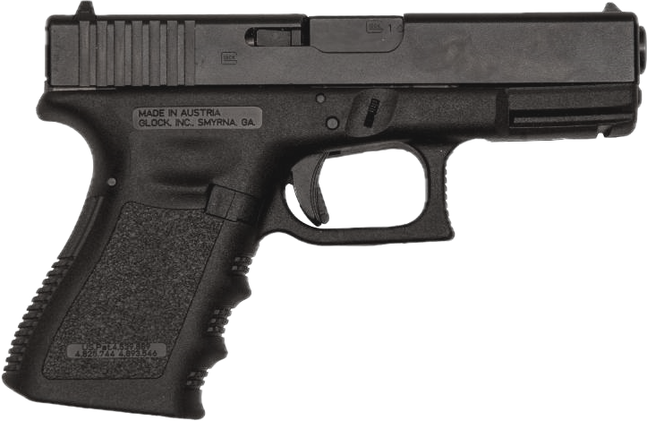

Professional Handgun Shooting
Accuracy and speed with a handgun: grip, stance, sight alignment, trigger control, recoil management, the draw, reloads, malfunctions, dry practice, and competition formats. Short sight radius and a light gun make every error bigger than with a rifle.

Built on U.S. Army TC 3-23.35 Pistol, the FBI pistol qualification, and USPSA, IDPA, and NRA practice. Times are typical standards, not hard limits. Right-handed shooter assumed; mirror for left-handed.
01Safety
The four rules
- Treat every firearm as if it's loaded.
- Never point the muzzle at anything you aren't willing to destroy.
- Keep your finger off the trigger until your sights are on the target and you've decided to fire.
- Be sure of your target and what's beyond it.
Handgun-specific
- A handgun's short length makes it easy to sweep yourself and others. Watch the support hand during the draw and holstering.
- Holster slowly. Look the gun into the holster, finger straight, clothing and straps clear of the holster mouth.
- Use a holster that fully covers the trigger guard and holds the gun without a hand on it.
- In competition, the muzzle must stay within the 180° line: never past perpendicular to the backstop.
- Never try to catch a dropped gun.
On the range
A shared range runs on commands from the range safety officer (RSO). Listen for them the whole time you're on the line. With hearing protection on, commands are easy to miss: electronic muffs make speech easier to hear, and you should watch the RSO, the range lights or flags, and the shooters on either side. If everyone around you has stopped, stop and find out why.
| Command | What it means | What you do |
|---|---|---|
| "The range is hot" | Live fire is allowed. Nobody is forward of the firing line. | Eye and ear protection on, including behind the line. Handle firearms only at your position on the line, muzzle downrange. |
| "Commence fire" | You may load and shoot. | Load only now, and only at the line. Wait for this even when the range has been called hot. |
| "Cease fire" | Stop shooting immediately. Anyone who sees a danger can call it, and everyone obeys it no matter who called it. | Finger off the trigger and out of the guard, muzzle downrange, and stay where you are. Don't load, unload, or step back until the RSO tells you what to do next. |
| "Unload and show clear" | Make your firearm safe and let the RSO check it. | Remove the ammunition, open and lock the action, and show the empty chamber to the RSO. |
| "Is the line clear?" / "The line is clear" | The RSO is confirming, then announcing, that every firearm on the line is unloaded with its action open. | Your gun is benched or racked: action open, chamber flag in, magazines out. Step back behind the safety line. |
| "The range is cold" | Nobody touches a firearm. People may go downrange to check or change targets. | Hands off guns and ammunition, including loading magazines at the bench, until the range is called hot again. Stay behind the safety line unless you're going downrange. |
Wording varies by range and organization; some use "the line is safe," whistles, or lights. Read the posted range rules and listen to the briefing before you shoot. The principle doesn't change: firing stops on a cease fire, and no one goes forward until every gun is verified clear.
Clear the gun before you step off the line
- Finger off the trigger, muzzle downrange.
- Remove the ammunition source first: magazine out, or the magazine tube emptied.
- Open the action and lock it open. Any round in the chamber comes out.
- Look and feel: check the chamber and the magazine well or tube by eye, then with a finger. Do the check every time, even when you're sure it's empty.
- Insert a chamber flag if the range requires one.
- Bench, rack, case, or holster it the way the range rules say. Never walk away from a loaded gun or carry one off the line.
Handgun: drop the magazine first, then rack the slide several times and lock it back. Racking first and dropping the magazine second chambers a new round. Check the chamber and the magazine well before you holster or case it.
02Ammunition
Bullet weight is measured in grains; there are 7,000 grains in a pound. In a given handgun cartridge, lighter bullets leave faster with a sharper recoil impulse, and heavier bullets are slower, recoil with more of a push, and usually print a little higher on the target. Changing weight or type moves your point of impact, so confirm it on paper when you change loads, and run at least 200 rounds of your carry ammunition through the gun before you trust it.
| Cartridge | Common weights | Common types | Typical velocity | Typical use |
|---|---|---|---|---|
| .380 ACP | 90 · 95 · 99 gr | FMJ, JHP | 900–1,000 ft/s (3.75") | Deep concealment pocket pistols; marginal penetration with some JHPs |
| .38 Special | 110 · 125 · 130 · 158 gr | LRN, FMJ, +P JHP, wadcutter | 750–950 ft/s (4") less from a 2" snub | Revolver carry and home defense, light-recoil practice in .357 revolvers |
| 9mm Luger (9×19) | 115 · 124 · 147 gr | FMJ, JHP, +P JHP, frangible | 950–1,250 ft/s (4") +100–200 from a 16" carbine | Carry, duty, training, pistol-caliber carbine |
| .357 Magnum | 125 · 158 · 180 gr | JHP, JSP, hard-cast lead | 1,150–1,450 ft/s (4") up to 1,800 from an 18" lever gun | Revolver carry, woods carry, hunting, lever-action carbines; fires .38 Special too |
| .40 S&W | 155 · 165 · 180 gr | FMJ, JHP | 980–1,200 ft/s (4") | Duty (declining), carry |
| 10mm Auto | 155 · 180 · 200 gr | FMJ, JHP, hard-cast lead | 1,100–1,400 ft/s (5") | Woods carry against large animals, hunting, carry |
| .45 ACP | 185 · 200 · 230 gr | 230 gr FMJ ("ball"), JHP, +P JHP | 830–1,000 ft/s (5") | Carry, duty, competition |
| .44 Magnum | 180 · 240 · 300 gr | JHP, JSP, hard-cast lead | 1,200–1,600 ft/s (6") up to 1,750 from a 20" lever gun | Woods carry against large animals, handgun and lever-action hunting; heavy recoil |
| 5.7×28 mm | 27 · 40 gr | V-Max polymer tip, JHP, FMJ | 1,650–1,750 ft/s (4.8") | Low-recoil, high-capacity pistols and PDWs |
| Bullet type | What it is | Use |
|---|---|---|
| FMJ (full metal jacket, "ball") | Lead core covered by a copper jacket at the nose | Training and practice; penetrates deeply and expands little |
| JHP (jacketed hollow point) | Cavity in the nose that opens on impact | Carry and duty; expands to a larger diameter and is less likely to exit |
| Bonded JHP | Core bonded to the jacket so they stay together | Duty loads that must go through car glass and heavy clothing |
| Solid copper hollow point | Monolithic copper, no lead core | Defense where lead-free is preferred; keeps its weight through barriers |
| LRN / LFN (lead round nose, lead flat nose) | Bare or coated lead, no jacket | Cheap practice, revolvers; hard-cast flat nose for deep penetration on large animals |
| TMJ / total synthetic jacket | Base fully covered, no exposed lead | Indoor ranges that restrict exposed-lead ammunition |
| Frangible | Compressed copper powder that breaks apart on hard surfaces | Steel targets at close range, shoot houses |
| +P / +P+ | Loaded to higher pressure for more velocity | Only in guns rated for it; more recoil and wear. +P+ has no industry standard |
Carry ammunition
Pick a JHP from a major maker that meets the FBI protocol of 12 to 18 inches of penetration in ballistic gelatin. Fire enough of it to prove it feeds, and replace carry rounds every year or after repeated chambering, which can push the bullet deeper into the case (setback) and raise pressure.
Practice ammunition
Match your practice FMJ to your carry load's weight (for example, 124 gr FMJ for 124 gr JHP carry) so recoil and point of impact are close. Avoid steel-cased ammunition in guns that haven't been proven with it.
03Ballistic calculator
Handgun bullets are slow and drop quickly past 25 yards. Pick a load, set your zero and sight height (about 0.6" for iron sights, 0.9–1.2" for a slide-mounted red dot), and see the hold at any distance. Choose a carbine load to compare a 16-inch pistol-caliber carbine, or a lever gun for the magnum revolver cartridges.
04Grip
The grip controls where the muzzle goes during recoil and how much the trigger finger moves the gun. Get it right on the draw; there's no time to fix it after.
Building the grip
- Web of the strong hand as high as the frame allows.
- Trigger finger free to move independently; the other three fingers wrap the front strap.
- Support palm fills the open panel on the left of the grip, heel of the hand against the frame.
- Support fingers wrap over the strong fingers, index finger pressed up under the trigger guard.
- Both thumbs forward, support thumb under the slide.
- Lock the support wrist slightly forward (canted down) to resist muzzle rise.
Pressure
Most instructors teach firm pressure from both hands, with the support hand doing more of the clamping (often cited as about 60/40 support to strong). That leaves the strong hand loose enough to let the trigger finger move without dragging the gun. Grip as hard as you can without shaking, and keep the same pressure through the whole string.
05Stance
- Feet about shoulder-width, knees soft, weight on the balls of the feet.
- Lean the shoulders slightly forward of the hips so recoil doesn't push you back.
- Bring the gun up to your eye line; don't drop your head down to the gun.
- Arms extended without locking the elbows hard.
06Sight alignment and sight picture
Sight alignment is the front sight centered in the rear notch, tops level, equal light on each side. Sight picture is that alignment placed on the target. The eye can focus on only one distance at a time; for precision, it belongs on the front sight.
| Front sight off by | 7 yd | 15 yd | 25 yd |
|---|---|---|---|
| 1/32" (half a sight width) | ≈1.2" | ≈2.6" | ≈4.3" |
| 1/16" | ≈2.4" | ≈5.2" | ≈8.7" |
Assumes a 6.5-inch sight radius, typical of a full-size service pistol. Shorter guns magnify the error.
Red dot on a pistol
The dot rides on the slide, so there's nothing to align. Focus on the target and put the dot on it. The hard part is finding the dot on the presentation: practice a consistent grip and draw so the dot appears in the window every time. Keep iron sights tall enough to co-witness as a backup.
How much precision
Match the sight picture to the target. A small target at 25 yd needs a refined, crisp front sight. A large target at 5 yd needs only a flash of the front sight in the notch, or the dot somewhere on the target. Spend only the time the shot requires.
07Trigger control
A handgun trigger has phases you can feel: slack (take-up), the wall, the break, overtravel, and the reset. Take up the slack, press smoothly through the wall, hold to the rear after the break, and let it out only to the reset.
Finger placement
Most shooters use the center of the pad of the index finger. Large hands on small guns may need more finger; double-action triggers often work better at the first joint. The test is whether the front sight moves as you press.
Prepping the trigger
At speed, shooters take up the slack while the gun is still coming onto the target, so only the final press through the wall is left when the sights arrive. Prep only once the muzzle is on target and you've decided to shoot.
08Diagnosing errors
Shots that consistently miss in one direction usually come from a specific habit. This chart is for a right-handed shooter; mirror it left to right for a left-handed shooter. Treat it as a starting point and confirm with dry fire and shot calls.
09Recoil and follow-through
The gun will move in recoil. What matters is that it moves the same way every time and returns to the same place. A firm grip and forward-leaning stance shorten the time the sights are off target, which sets how fast you can accurately fire the next shot.
- Track the sights. Watch the front sight (or dot) lift and come back down. Seeing that clearly is how you call shots at speed.
- Reset during recoil. Let the trigger out only to the reset while the gun is moving, so you're ready when the sights return.
- Don't fight it. Pushing down against recoil before the shot causes low hits. Let the grip and stance absorb it.
10The draw
A draw is a series of positions the gun passes through every time. Practicing it as steps first makes it consistent, then smooth, then fast.
| Step | What happens | Check |
|---|---|---|
| 1 · Grip | Strong hand takes a full firing grip on the gun in the holster. Support hand moves to the center of the chest. | Web of the hand high; finger along the holster |
| 2 · Clear and rotate | Pull the gun straight up out of the holster, then rotate the muzzle toward the target with the wrist locked. | Muzzle never points at your own body |
| 3 · Meet | Hands meet in front of the chest and the support hand completes the grip. Eyes stay on the target. | Muzzle on the target line; finger still straight |
| 4 · Extend | Push the gun out along the line of sight, bringing it up to the eye. Finger enters the guard as the gun nears full extension. | Sights arrive at the eye; trigger prepped |
Holstering reverses steps 4 to 1, slowly, finger straight, looking the gun into the holster.
11Reloads
| Reload | When | Steps | Typical time |
|---|---|---|---|
| Emergency (slide-lock) | Gun is empty, slide locked back | Drop the empty magazine while the support hand gets a fresh one; seat firmly; release the slide with the slide stop or by racking | 1.5–2.5 s |
| Speed | Gun still has a round chambered; you want a full magazine now | Drop the partial magazine to the ground; insert a fresh one | 1.2–2.0 s |
| With retention / tactical | Lull in the action; keep the partial magazine | Get the fresh magazine first, swap, stow the partial in a pocket | 3–5 s |
Reload technique
- Bring the gun back toward your face, in your field of view, muzzle up slightly. Watch the magazine well, not the magazine.
- Index finger along the front of the fresh magazine, pointing at the bullets.
- Insert the back of the magazine against the back of the well, then rock it in and seat it hard with the palm.
- Look for the target as soon as the magazine is seated.
12Malfunctions
| Type | Signs | Clearance |
|---|---|---|
| Type 1: failure to fire | Click instead of bang; magazine not seated, empty chamber, bad primer | Tap the magazine hard, rack the slide fully, reassess and fire if needed |
| Type 2: failure to eject | Empty case caught in the port, often standing up ("stovepipe") | Tap, rack with the gun rotated slightly so the case falls clear. Some teach sweeping the port; tap-rack works for both Type 1 and 2, so you don't have to diagnose. |
| Type 3: double feed | Slide out of battery; tap-rack doesn't fix it | Lock the slide back, strip the magazine out, rack three times to clear, reload a fresh magazine, rack, reassess |
| Squib | Weak report, little or no recoil | Stop. Don't fire again. Unload and check the bore for a lodged bullet. |
13Dry practice
Dry-fire safety: no ammunition in the room. Unload, put all ammunition in another room, check the gun and magazines twice, pick a target with a backstop that would stop a round, and say aloud "dry practice begins." When you finish, say "dry practice is over" before reloading, and don't take "one more."
| Drill | How | Reps |
|---|---|---|
| Wall drill | Front sight on a blank wall from 6 inches; press without the sight moving | 20 |
| Coin or brass on the slide | Balance a coin or empty case on the front sight; press without dropping it | 20 |
| Draw to first shot | Full draw to a single press on a small target; use a timer with a par time you can just make | 25 |
| Reloads | Slide-lock and speed reloads with dummy rounds or empty magazines | 15 each |
| Target transitions | Three small targets on the wall; one press on each, eyes move first | 15 |
Ten to fifteen minutes, four or five days a week, builds more skill than an occasional long range session. Use the range to confirm what dry practice built.
14Competition formats
| Format | What it tests | Scoring | Distances |
|---|---|---|---|
| Bullseye (NRA Precision Pistol) | One-handed precision; slow, timed, and rapid fire | Points by ring | 25–50 yd |
| USPSA | Speed, accuracy, and power on freestyle stages with movement | Hit factor: points ÷ time | 3–50 yd |
| IDPA | Defensive-style stages with cover, concealment garments, and set procedures | Time plus penalties for points down | 3–20 yd |
| Steel Challenge | Pure speed on fixed steel arrays | Total time of best 4 of 5 strings | 7–35 yd |
| Bianchi Cup (NRA Action) | Precision at speed, including movers | Points with X-count | 10–50 yd |
15Drills and standards
| Drill | Setup | Good / advanced |
|---|---|---|
| Dot Torture | 50 rounds on a sheet of 2-inch dots at 3 yd: slow fire, draws, one-handed strings | 50/50 at 3 yd, then move back |
| 5×5 | 5 shots in a 5-inch circle at 5 yd from the holster | 5 s / 3 s |
| Bill Drill | From holster, 6 shots in the A-zone at 7 yd | 3.0 s / 2.0 s |
| Doubles | From holster, 2 shots on an A-zone at 7 yd | 1.8 s / 1.2 s |
| El Presidente | 3 targets at 10 yd, start facing away; turn, 2 each, reload, 2 each | 10 s / 6 s, all A's |
| Blake Drill | 3 targets at 7 yd, 1 shot each, repeated 3 times (9 rounds) | 4.0 s / 3.0 s |
| FBI qualification | 60 rounds from 3 to 25 yd with time limits on each stage | Pass 80%; instructors 90% |
16Common errors
| Error | What it does | Fix |
|---|---|---|
| Low grip | More muzzle rise and slower return; gun shifts in the hand over a string | Drive the web of the hand high on the draw every time |
| Target focus on precise shots | Front sight drifts without you noticing | Hard front sight focus at distance or on small targets |
| Flinch or anticipation | Low hits | Ball-and-dummy drill; dry fire |
| Milking the grip | All fingers tighten with the trigger; low-left hits | Isolate the trigger finger; more support-hand pressure |
| Riding the reset too fast | Trigger released fully, slapped on the next press | Practice reset in dry fire; feel the click |
| Looking at the magazine on reloads | Slow and fumbled insertion | Eyes on the magazine well; gun in the line of sight |
| Fast holstering | Negligent discharges from clothing or fingers in the guard | Slow, look it in, finger straight |
17Videos
Selected videos from Garand Thumb, Dirty Civilian, Administrative Results, and Brass Facts, each starting at the part that matches its section. They play from YouTube; nothing loads until you press play.